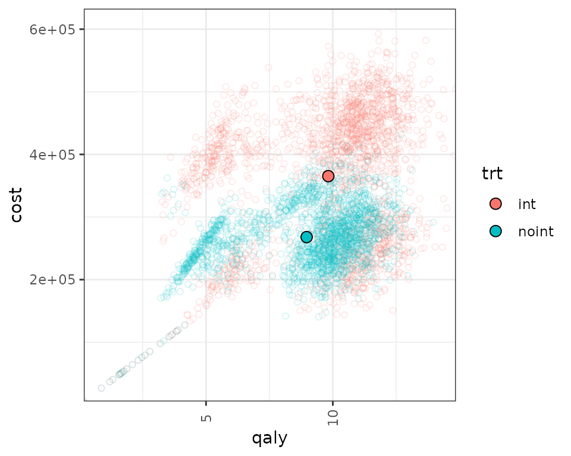

example_eBC.RmdThis document runs a discrete event simulation model in the context of early breast cancer to show how the functions can be used to generate a model in only a few steps.
When running a DES, it’s important to consider speed. Simulation based models can be computationally expensive, which means that using efficient coding can have a substantial impact on performance. Because the model is using parallel computing, in order to debug the model one can simply use browser() where needed and set the number of patients to be simulated equal to 1.
library(descem)
library(dplyr)
#>
#> Attaching package: 'dplyr'
#> The following objects are masked from 'package:stats':
#>
#> filter, lag
#> The following objects are masked from 'package:base':
#>
#> intersect, setdiff, setequal, union
library(purrr)
library(tidyr)
library(flexsurv)
#> Loading required package: survival
library(ggplot2)
library(kableExtra)
#>
#> Attaching package: 'kableExtra'
#> The following object is masked from 'package:dplyr':
#>
#> group_rowsThe model is represented below. Patients start in early breast cancer, and draw times to event. Patients also draw a probability of going into metastatic breast cancer or going into remission. If they go into remission, they can have a metastatic recurrence. At any point in time they can die, depending on the risk of each disease stage.
The dummy data for costs and utility is generated below.
#Utilities
util.data <- data.frame( name = c("util.idfs.ontx" ,"util.idfs.offtx" ,"util.remission" ,"util.recurrence" ,"util.mbc.progression.mbc" ,"util.mbc.pps"),
value = c(0.75, 0.8,0.9,0.7,0.6,0.5),
se=rep(0.02,6),
stringsAsFactors = FALSE
)
#Costs
cost.data <- data.frame( name = c("cost.idfs.tx" ,"cost.recurrence" ,"cost.mbc.tx" ,"cost.tx.beva" ,"cost.idfs.txnoint",
"cost.idfs","cost.mbc.progression.mbc","cost.mbc.pps","cost.2ndline","cost.ae"),
value = c(40000,5000,3000,10000,30000,
10000,20000,30000,20000,1000),
stringsAsFactors = FALSE
) %>%
mutate(se= value/5)Initial inputs and flags that will be used in the model can be defined below. We can define inputs that are common to all patients (common_all_inputs) within a simulation, inputs that are unique to a patient independently of the treatment (e.g. natural death, defined in common_pt_inputs), and inputs that are unique to that patient and that treatment (unique_pt_inputs). Items can be included through the add_item function, and can be used in subsequent items (e.g. below, we define sex_pt and we use it in nat.os.s to get the background mortality for that patient). All these inputs are generated before the events and the reaction to events are executed. Furthermore, the program first executes common_all_inputs, then common_pt_inputs and then unique_pt_inputs. So one could use the items generated in common_all_inputs in unique_pt_inputs.
The flag fl.remission is drawn using a Bernoulli distribution with probability 0.8. This means that 80% of the patients will have a remission, while 20% will go into early metastatic BC. Note that this could also be modeled differently by using a time to remission and time to early metastatic BC, comparing these and choosing the pathway depending on which one is smaller.
We also define here the specific utilities and costs that will be used in the model. We create a named vector that identifies the costs and utilities, and then we assign them to each specific item. Note that while util_v or cost_v is a named vector, the specific items that will be used by the model (e.g. util.remission) are unnamed. It is strongly recommended to assign unnamed objects if they are going to be processed in the model. In this case, we’re only using util_v and cost_v as an intermediate input and these objects will not be processed (we just use them to make the code more readable), so it’s fine if we name them. However, naming the value of util.remission (e.g. using one bracket instead of two in util_v[["util.remission"]]) may cause the outputs from the model to change names, depending on use. This is because of how R works: it would correspond to a named list with a named vector/element, which R concatenates, so in this case it would end up generating qaly.util.remission as an output of the model instead of just qaly).
#Each patient is identified through "i"
#Items used in the model should be unnamed numeric/vectors! otherwise if they are processed by model it can lead to strangely named outcomes
#In this case, util_v is a named vector, but it's not processed by the model. We extract unnamed numerics from it.
#Put objects here that do not change on any patient or intervention loop
common_all_inputs <- add_item( #utilities
util_v = if(psa_bool){
setNames(MASS::mvrnorm(1,util.data$value,diag(util.data$se^2)),util.data$name) #in this case I choose a multivariate normal with no correlation
} else{setNames(util.data$value,util.data$name)},
util.idfs.ontx = util_v[["util.idfs.ontx"]],
util.idfs.offtx = util_v[["util.idfs.offtx"]],
util.remission = util_v[["util.remission"]],
util.recurrence = util_v[["util.recurrence"]],
util.mbc.progression.mbc = util_v[["util.mbc.progression.mbc"]],
util.mbc.pps = util_v[["util.mbc.pps"]]
) %>%
add_item( #costs
cost_v = if(psa_bool){
setNames(draw_gamma(cost.data$value,cost.data$se),cost.data$name) #in this case I choose a gamma distribution
} else{setNames(cost.data$value,cost.data$name)},
cost.idfs.tx = cost_v[["cost.idfs.tx"]],
cost.recurrence = cost_v[["cost.recurrence"]],
cost.mbc.tx = cost_v[["cost.mbc.tx"]],
cost.tx.beva = cost_v[["cost.tx.beva"]],
cost.idfs.txnoint = cost_v[["cost.idfs.txnoint"]],
cost.idfs = cost_v[["cost.idfs"]],
cost.mbc.progression.mbc = cost_v[["cost.mbc.progression.mbc"]],
cost.mbc.pps = cost_v[["cost.mbc.pps"]],
cost.2ndline = cost_v[["cost.2ndline"]],
cost.ae = cost_v[["cost.ae"]]
)
#Put objects here that do not change as we loop through interventions for a patient
common_pt_inputs <- add_item(sex_pt = ifelse(rbernoulli(1,p=0.01),"male","female"),
nat.os.s = draw_resgompertz(1,
shape=if(sex_pt=="male"){0.102}else{0.115},
rate=if(sex_pt=="male"){0.000016}else{0.0000041},
lower_bound = 50) ) #in years, for a patient who is 50yo
#Put objects here that change as we loop through treatments for each patient (e.g. events can affect fl.tx, but events do not affect nat.os.s)
#common across trt but changes per pt could be implemented here (if (trt==)... )
unique_pt_inputs <- add_item(
fl.idfs.ontx = 1,
fl.idfs = 1,
fl.mbcs.ontx = 1,
fl.mbcs.progression.mbc = 1,
fl.tx.beva = 1,
fl.mbcs = 0,
fl.mbcs_2ndline = 0,
fl.recurrence = 0,
fl.remission = rbernoulli(1,0.8) #80% probability of going into remission
)Events are added below through the add_tte function. We use this function twice, one per intervention. We must define several arguments: one to indicate the intervention, one to define the names of the events used, one to define the names of other objects created that we would like to store (optional, maybe we generate an intermediate input which is not an event but that we want to save) and the actual input in which we generate the time to event. Events and other objects will be automatically initialized to Inf. We draw the times to event for the patients. This chunk is a bit more complex, so it’s worth spending a bit of time explaining it.
The init_event_list object is populated by using the add_tte function twice, one for the “int” strategy and other for the “noint” strategy. We first declare the start time to be 0.
We then proceed to generate the actual time to event. We use the draw_tte() function to generate the time to event using a log-normal distribution for the event variables that are of interest. One should always be aware of how the competing risks interact with each other. While we have abstracted from these type of corrections here, it is recommended to have an understanding about how these affect the results and have a look at the competing risks/semi-competing risks literature.
Note that in our model, the initial list of events are start, ttot, ttot.beva, progression.mbc, os, idfs, ttot.early, remission, recurrence and start.early.mbc. However, other, non-initial events can be defined in the reactions part seen in the section below.
init_event_list <-
add_tte(trt="int",
evts = c("start","ttot", "ttot.beva","progression.mbc", "os","idfs","ttot.early","remission","recurrence","start.early.mbc"),
other_inp = c("os.early","os.mbc"),
input={ #intervention
start <- 0
#Early
idfs <- draw_tte(1,'lnorm',coef1=2, coef2=log(0.2))
ttot.early <- min(draw_tte(1,'lnorm',coef1=2, coef2=log(0.2)),idfs)
ttot.beva <- draw_tte(1,'lnorm',coef1=2, coef2=log(0.2))
os.early <- draw_tte(1,'lnorm',coef1=3, coef2=log(0.2))
#if patient has remission, check when will recurrence happen
if (fl.remission) {
recurrence <- idfs +draw_tte(1,'lnorm',coef1=2, coef2=log(0.2))
remission <- idfs
#if recurrence happens before death
if (min(os.early,nat.os.s)>recurrence) {
#Late metastatic (after finishing idfs and recurrence)
os.mbc <- draw_tte(1,'lnorm',coef1=0.8, coef2=log(0.2)) + idfs + recurrence
progression.mbc <- draw_tte(1,'lnorm',coef1=0.5, coef2=log(0.2)) + idfs + recurrence
ttot <- draw_tte(1,'lnorm',coef1=0.5, coef2=log(0.2)) + idfs + recurrence
}
} else{ #If early metastatic
start.early.mbc <- draw_tte(1,'lnorm',coef1=2.3, coef2=log(0.2))
idfs <- ifelse(start.early.mbc<idfs,start.early.mbc,idfs)
ttot.early <- min(ifelse(start.early.mbc<idfs,start.early.mbc,idfs),ttot.early)
os.mbc <- draw_tte(1,'lnorm',coef1=0.8, coef2=log(0.2)) + start.early.mbc
progression.mbc <- draw_tte(1,'lnorm',coef1=0.5, coef2=log(0.2)) + start.early.mbc
ttot <- draw_tte(1,'lnorm',coef1=0.5, coef2=log(0.2)) + start.early.mbc
}
os <- min(os.mbc,os.early,nat.os.s)
}) %>% add_tte(trt="noint",
evts = c("start","ttot", "ttot.beva","progression.mbc", "os","idfs","ttot.early","remission","recurrence","start.early.mbc"),
other_inp = c("os.early","os.mbc"),
input={ #reference strategy
start <- 0
#Early
idfs <- draw_tte(1,'lnorm',coef1=2, coef2=log(0.2),hr=1.2)
ttot.early <- min(draw_tte(1,'lnorm',coef1=2, coef2=log(0.2),hr=1.2),idfs)
os.early <- draw_tte(1,'lnorm',coef1=3, coef2=log(0.2),hr=1.2)
#if patient has remission, check when will recurrence happen
if (fl.remission) {
recurrence <- idfs +draw_tte(1,'lnorm',coef1=2, coef2=log(0.2))
remission <- idfs
#if recurrence happens before death
if (min(os.early,nat.os.s)>recurrence) {
#Late metastatic (after finishing idfs and recurrence)
os.mbc <- draw_tte(1,'lnorm',coef1=0.8, coef2=log(0.2)) + idfs + recurrence
progression.mbc <- draw_tte(1,'lnorm',coef1=0.5, coef2=log(0.2)) + idfs + recurrence
ttot <- draw_tte(1,'lnorm',coef1=0.5, coef2=log(0.2)) + idfs + recurrence
}
} else{ #If early metastatic
start.early.mbc <- draw_tte(1,'lnorm',coef1=2.3, coef2=log(0.2))
idfs <- ifelse(start.early.mbc<idfs,start.early.mbc,idfs)
ttot.early <- min(ifelse(start.early.mbc<idfs,start.early.mbc,idfs),ttot.early)
os.mbc <- draw_tte(1,'lnorm',coef1=0.8, coef2=log(0.2)) + start.early.mbc
progression.mbc <- draw_tte(1,'lnorm',coef1=0.5, coef2=log(0.2)) + start.early.mbc
ttot <- draw_tte(1,'lnorm',coef1=0.5, coef2=log(0.2)) + start.early.mbc
}
os <- min(os.mbc,os.early,nat.os.s)
})Once the initial times of the events have been defined, we also need to declare how events react and affect each other. To do so, we use the evt_react_list object and the add_reactevt function. This function just needs to state which event is affected and the actual reaction (usually setting flags to 1 or 0, or creating new/adjusting events). This example contains the addition of a number of events (e.g. adverse events) based on a Poisson distribution and also the modification of a specific event (e.g. modifying the time to death by subtracting 1.5 months from it for each adverse event).
There are a series of objects that can be used in this context to help with the reactions. Apart from the global objects and flags defined above, we can also use curtime for the current event time, prevtime for the time of the previous event, cur_evtlist for the named vector of events that is yet to happen for that patient, trt for the current treatment in the loop, evt for the current event being processed, i expresses the patient iteration, and simulation the specific simulation (relevant when the number of simulations is greater than 1). Furthermore, one can also call any other input/item that has been created before or create new ones. For example, we could even modify a cost/utility item by changing it directly, e.g. through modify_item(list(cost.idfs.tx=500)).
| Item | What does it do |
|---|---|
curtime |
Current event time (numeric) |
prevtime |
Time of the previous event (numeric) |
cur_evtlist |
Named vector of events that is yet to happen for that patient (named numeric vector) |
evt |
Current event being processed (character) |
i |
Patient being iterated (character) |
simulation |
Simulation being iterated (numeric) |
The functions to add/modify events and inputs use lists. Whenever several inputs/events are added or modified, it’s recommended to group them within one function, as it reduces the computation cost. So rather than use two modify_item with a list of one element, it’s better to group them into a single modify_item with a list of two elements.
new_eventallows to generate events and add them to the vector of events. It accepts more than one event. modify_event allows to modify events (e.g. delay death). When adding an event, the name of the events and the time of the events must be defined. When using modify_event, one must indicate which events are affected and what are the new times of the events. If the event specified does not exist or has already occurred, it will be ignored. Note that one could potentially omit part of the modeling set in init_event_list and actually define new events dynamically through the reactions (we do that below for the "ae" event). However, this can have an impact in computation time, so if possible it’s always better to use init_event_list. modify_item allows to modify and add items. Elements defined within this function are not evaluated sequentially (i.e. defining modify_item(list(fl.new = 1, var1 = fl.new * 5))) will give an error if fl.new was not defined outside this function).
The list of relevant functions to be used within add_reactevt are:
| Function | What does it do | How to use it |
|---|---|---|
modify_item() |
Adds & Modifies items/flags/variables for future events | modify_item(list("fl.idfs.ontx"=0,"fl.tx.beva"=0)) |
new_event() |
Adds events to the vector of events for that patient | new_event(rep(list("ae"=curtime + 0.001),5)) |
modify_event() |
Modifies existing events by changing their time | modify_event(list("os"=curtime +5, "ttot"=curtime+0.0001)) |
The model will run until curtime is set to Inf, so the event that terminates the model (in this case, os), should modify curtime and set it to Inf.
evt_react_list <-
add_reactevt(name_evt = "start",
input = {}) %>%
add_reactevt(name_evt = "ttot",
input = {
modify_item(list("fl.mbcs.ontx"= 0)) #Flag that patient is now off-treatment
}) %>%
add_reactevt(name_evt = "ttot.beva",
input = {
modify_item(list("fl.tx.beva"= 0)) #Flag that patient is now off-treatment
}) %>%
add_reactevt(name_evt = "progression.mbc",
input = {
modify_item(list("fl.mbcs.progression.mbc"=0,"fl.mbcs_2ndline"=1)) #Flag that patient is progressed and going in 2nd line
new_event(list("2ndline_mbc" = curtime + draw_tte(1,'exp', log(0.08))/12))
}) %>%
add_reactevt(name_evt = "idfs",
input = {
modify_item(list("fl.idfs"= 0))
}) %>%
add_reactevt(name_evt = "ttot.early",
input = {
modify_item(list("fl.idfs.ontx"=0,"fl.tx.beva"=0)) #Flag that patient is now off-treatment
n_ae <- rpois(1,lambda=0.25*(curtime -prevtime)) #1 AE every 4 years
if (n_ae>0) {
new_event(rep(list("ae" = curtime + 0.0001),n_ae))
}
}) %>%
add_reactevt(name_evt = "remission",
input = {
modify_item(list("fl.remission"= 1))
}) %>%
add_reactevt(name_evt = "recurrence",
input = {
modify_item(list("fl.recurrence"=1,"fl.remission"=0,"fl.mbcs"=1,"fl.mbcs.progression.mbc"=1)) #ad-hoc for plot
}) %>%
add_reactevt(name_evt = "start.early.mbc",
input = {
modify_item(list("fl.mbcs"=1,"fl.mbcs.progression.mbc"=1))
}) %>%
add_reactevt(name_evt = "2ndline_mbc",
input = {
modify_item(list("fl.mbcs_2ndline"= 0))
n_ae <- rpois(1,lambda=0.25*(curtime -prevtime)) #1 AE every 4 years
if (n_ae>0) {
new_event(rep(list("ae" = curtime + 0.0001),n_ae))
}
}) %>%
add_reactevt(name_evt = "ae",
input = {
modify_event(list("os" =max(cur_evtlist[["os"]] - 0.125,curtime +0.0001) ))#each AE brings forward death by 1.5 months
}) %>%
add_reactevt(name_evt = "os",
input = {
modify_item(list("fl.tx.beva"=0,"fl.mbcs.ontx"=0,"fl.idfs"=0,"fl.mbcs"=0,"curtime"=Inf))
}) Costs and utilities are introduced below. However, it’s worth noting that the model is able to run without costs or utilities.
Utilities are defined using pipes with the add_util function. The first argument says which events are affected, the second argument which treatments are affected, and the third one describe the utilities. Instant utilities (e.g. AE disutilities) and cycle utilities can be defined in a similar fashion, but for the cycle utilities the cycle length and the starting time of the cycle must also be indicated. Note that one can write expressions and objects whose execution will be delayed until the model runs.
util_ongoing <- add_util(evt = c("start","ttot","ttot.beva","progression.mbc","os","idfs","ttot.early","remission","recurrence","start.early.mbc","2ndline_mbc","ae"),
trt = c("int", "noint"),
util = if (fl.idfs==1) {
util.idfs.ontx * fl.idfs.ontx + (1-fl.idfs.ontx) * (1-fl.idfs.ontx)
} else if (fl.idfs==0 & fl.mbcs==0) {
util.remission * fl.remission + fl.recurrence*util.recurrence
} else if (fl.mbcs==1) {
util.mbc.progression.mbc * fl.mbcs.progression.mbc + (1-fl.mbcs.progression.mbc)*util.mbc.pps
}
) #common utility across armsCosts are defined using pipes with the add_cost function, in a similar fashion to the utilities. Costs by cycles can be included (even we don’t do it in this example) using the commented code. The starting time of the cycle can be initialized arbitrarily (time 9999, for example) and can be set in the reaction to the events.
cost_ongoing <-
add_cost(
evt = c("start","idfs","ttot.early") ,
trt = "noint",
cost = cost.idfs.txnoint* fl.idfs.ontx + cost.idfs) %>%
add_cost(
evt = c("start","idfs","ttot.early") ,
trt = "int",
cost = (cost.idfs.tx) * fl.idfs.ontx + cost.tx.beva * fl.tx.beva + cost.idfs) %>%
add_cost(
evt = c("remission","recurrence","start.early.mbc"),
trt = c("noint","int"),
cost = cost.recurrence * fl.recurrence) %>%
add_cost(
evt = c("ttot","ttot.beva","progression.mbc","os","2ndline_mbc"),
trt = c("noint","int"),
cost = cost.mbc.tx * fl.mbcs.ontx + cost.mbc.progression.mbc * fl.mbcs.progression.mbc + cost.mbc.pps * (1-fl.mbcs.progression.mbc) + cost.2ndline*fl.mbcs_2ndline )
cost_instant <- add_cost(
evt = c("ae"),
trt = c("noint","int"),
cost = cost.ae)The model can be run using the function RunSim below. We must define the number of patients to be simulated, the number of simulations, whether we want to run a PSA or not, the strategy list, the inputs, events and reactions defined above, the number of cores to be used (by default uses 1 core), the discount rate for costs and the discount rate for qalys. It is recommended not to use all the cores in the machine.
It is worth noting that the psa_bool argument does not run a PSA automatically, but is rather an additional input/flag of the model that we use as a reference to determine whether we want to use a deterministic or stochastic input. As such, it could also be defined in common_all_inputs as the first item to be defined, and the result would be the same. However, we recommend it to be defined in RunSim.
Note that the distribution chosen, the number of events and the interaction between events can have a substantial impact on the running time of the model.
#Logic is: per patient, per intervention, per event, react to that event.
results <- RunSim(
npats=2000, # number of patients to be simulated
n_sim=1, # number of simulations to run
psa_bool = FALSE, # use PSA or not. If n_sim > 1 and psa_bool = FALSE, then difference in outcomes is due to sampling (number of pats simulated)
trt_list = c("int", "noint"), # intervention list
common_all_inputs = common_all_inputs, # inputs common that do not change within a simulation
common_pt_inputs = common_pt_inputs, # inputs that change within a simulation but are not affected by the intervention
unique_pt_inputs = unique_pt_inputs, # inputs that change within a simulation between interventions
init_event_list = init_event_list, # initial event list
evt_react_list = evt_react_list, # reaction of events
util_ongoing_list = util_ongoing,
cost_ongoing_list = cost_ongoing,
cost_instant_list = cost_instant,
ncores = 2, # number of cores to use, recommended not to use all
drc = 0.035, # discount rate for costs
drq = 0.035, # discount rate for QALYs
input_out = c( # list of additional outputs (Flags, etc) that the user wants to export for each patient and event
"os.early",
"os.mbc",
"nat.os.s",
"sex_pt"
)
)
#> [1] "Simulation number: 1"
#> Warning in RunSim(npats = 2000, n_sim = 1, psa_bool = FALSE, trt_list =
#> c("int", : Item util_v is named. It is strongly advised to assign unnamed
#> objects if they are going to be processed in the model, as they can create
#> errors depending on how they are used within the model
#> Warning in RunSim(npats = 2000, n_sim = 1, psa_bool = FALSE, trt_list =
#> c("int", : Item cost_v is named. It is strongly advised to assign unnamed
#> objects if they are going to be processed in the model, as they can create
#> errors depending on how they are used within the model
#> [1] "Time to run iteration 1: 10.45s"
#> [1] "Total time to run: 10.45s"Once the model has been run, we can use the results and summarize them using the summary_results_det to print the results of the last simulation (if nsim=1, it’s the deterministic case), and summary_results_psa to show the PSA results (with the confidence intervals). We can also use the individual patient data generated by the simulation, which we collect here to plot in the psa_ipd object.
summary_results_det(results$final_output) #will print the last simulation!
#> int noint
#> costs 365317.90 267967.54
#> lys 12.99 11.83
#> qalys 9.82 8.97
#> ICER NA 84062.52
#> ICUR NA 114046.28
summary_results_psa(results$output_psa)
#> int noint
#> costs 365318(365318, 365318) 267968(267968, 267968)
#> lys 12.99(12.99, 12.99) 11.83(11.83, 11.83)
#> qalys 9.82(9.82, 9.82) 8.97(8.97, 8.97)
#> ICER NaN(NA, NA) 84063(84063, 84063)
#> ICUR NaN(NA, NA) 114046(114046, 114046)
psa_ipd <- bind_rows(map(results$output_psa, "merged_df"))
psa_ipd[1:10,] %>%
kable() %>%
kable_styling(bootstrap_options = c("striped", "hover", "condensed", "responsive"))| evtname | evttime | cost | qaly | ly | pat_id | trt | sex_pt | nat.os.s | os.early | os.mbc | total_costs | total_qalys | total_lys | simulation |
|---|---|---|---|---|---|---|---|---|---|---|---|---|---|---|
| start | 0.000000 | 0.0000 | 0.0000000 | 0.0000000 | 1 | int | female | 24.56429 | 17.0136 | 21.89380 | 414422.3 | 10.23653 | 12.87903 | 1 |
| idfs | 6.070305 | 328703.5455 | 4.1087943 | 5.4783924 | 1 | int | female | 24.56429 | 17.0136 | 21.89380 | 414422.3 | 10.23653 | 12.87903 | 1 |
| ttot.early | 6.070305 | 0.0000 | 0.0000000 | 0.0000000 | 1 | int | female | 24.56429 | 17.0136 | 21.89380 | 414422.3 | 10.23653 | 12.87903 | 1 |
| remission | 6.070305 | 0.0000 | 0.0000000 | 0.0000000 | 1 | int | female | 24.56429 | 17.0136 | 21.89380 | 414422.3 | 10.23653 | 12.87903 | 1 |
| ttot.beva | 8.579367 | 44868.1706 | 1.7557110 | 1.9507900 | 1 | int | female | 24.56429 | 17.0136 | 21.89380 | 414422.3 | 10.23653 | 12.87903 | 1 |
| recurrence | 13.987665 | 0.0000 | 3.3063563 | 3.6737292 | 1 | int | female | 24.56429 | 17.0136 | 21.89380 | 414422.3 | 10.23653 | 12.87903 | 1 |
| os | 17.013600 | 40850.6180 | 1.0656683 | 1.7761138 | 1 | int | female | 24.56429 | 17.0136 | 21.89380 | 414422.3 | 10.23653 | 12.87903 | 1 |
| start | 0.000000 | 0.0000 | 0.0000000 | 0.0000000 | 2 | int | female | 41.83077 | 19.2660 | 30.33222 | 379474.4 | 11.93604 | 14.02155 | 1 |
| ttot.early | 5.877182 | 319268.6445 | 3.9908581 | 5.3211441 | 2 | int | female | 41.83077 | 19.2660 | 30.33222 | 379474.4 | 11.93604 | 14.02155 | 1 |
| ae | 5.877282 | 816.9422 | 0.0000817 | 0.0000817 | 2 | int | female | 41.83077 | 19.2660 | 30.33222 | 379474.4 | 11.93604 | 14.02155 | 1 |
We can also check what has been the absolute number of events per strategy.
| trt | evtname | n |
|---|---|---|
| int | os | 2000 |
| int | start | 2000 |
| int | ttot.early | 1973 |
| int | idfs | 1965 |
| int | ttot.beva | 1948 |
| int | remission | 1565 |
| int | recurrence | 1314 |
| int | ae | 1185 |
| int | progression.mbc | 571 |
| int | ttot | 562 |
| int | start.early.mbc | 387 |
| int | 2ndline_mbc | 222 |
| noint | os | 2000 |
| noint | start | 2000 |
| noint | ttot.early | 1977 |
| noint | idfs | 1973 |
| noint | remission | 1614 |
| noint | ae | 1351 |
| noint | recurrence | 1227 |
| noint | progression.mbc | 449 |
| noint | ttot | 428 |
| noint | start.early.mbc | 339 |
| noint | 2ndline_mbc | 205 |
We now use the data output to plot the histograms/densities of the simulation.
data_plot <- results$final_output$merged_df %>%
# mutate(evttime = ifelse(evttime > 99, NA, evttime)) %>%
filter(evtname != "start") %>%
group_by(trt,evtname,simulation) %>%
mutate(median = median(evttime)) %>%
ungroup()
#Density
ggplot(data_plot) +
geom_density(aes(fill = trt, x = evttime),
alpha = 0.7) +
geom_vline(aes(xintercept=median,col=trt)) +
facet_wrap( ~ evtname, scales = "free_y") +
scale_y_continuous(expand = c(0, 0)) +
scale_x_continuous(expand = c(0, 0)) +
theme_bw()We can also plot the patient level QALY/costs. Note that there are several clusters in the distribution of patients according to their QALY/costs based on the pathway they took (early metastatic vs. remission and cure or recurrence).
data_qaly_cost<- psa_ipd[,.SD[1],by=.(pat_id,trt,simulation)][,.(trt,qaly=total_qalys,cost=total_costs,pat_id,simulation)]
data_qaly_cost[,ps_id:=paste(pat_id,simulation,sep="_")]
mean_data_qaly_cost <- data_qaly_cost %>% group_by(trt) %>% summarise(across(where(is.numeric),mean))
ggplot(data_qaly_cost,aes(x=qaly, y = cost, col = trt)) +
geom_point(alpha=0.15,shape = 21) +
geom_point(data=mean_data_qaly_cost, aes(x=qaly, y = cost, fill = trt), shape = 21,col="black",size=3) +
scale_y_continuous(expand = c(0, 0)) +
scale_x_continuous(expand = c(0, 0)) +
theme_bw()+
theme(axis.text.x = element_text(angle = 90, vjust = .5))